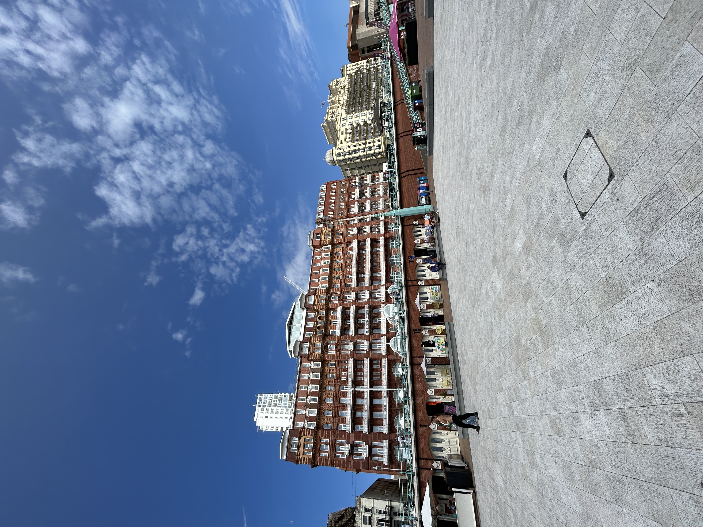
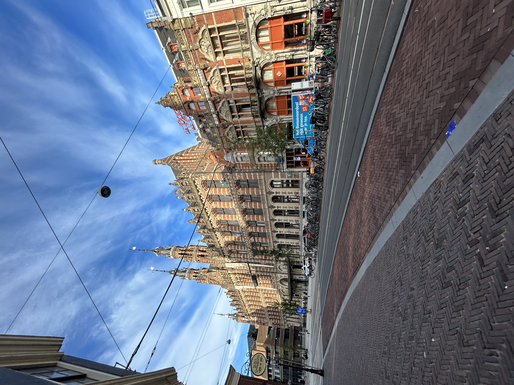
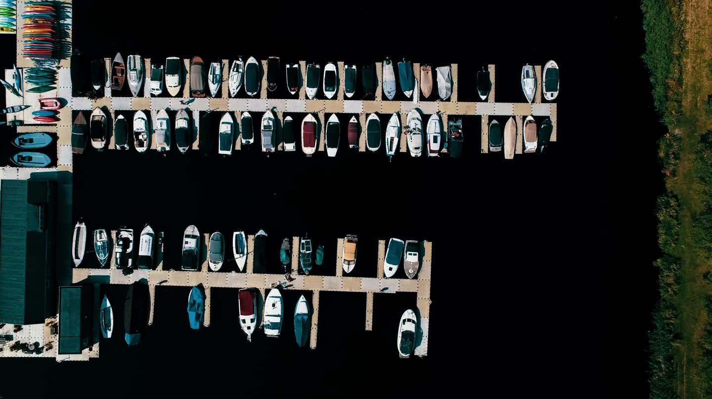
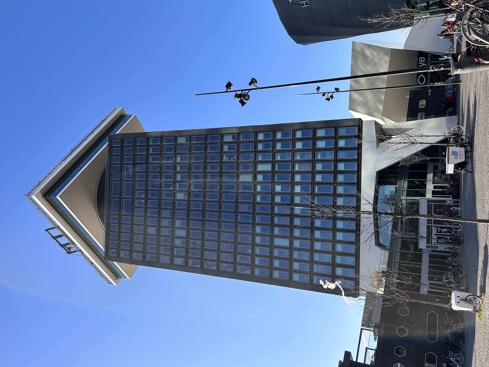
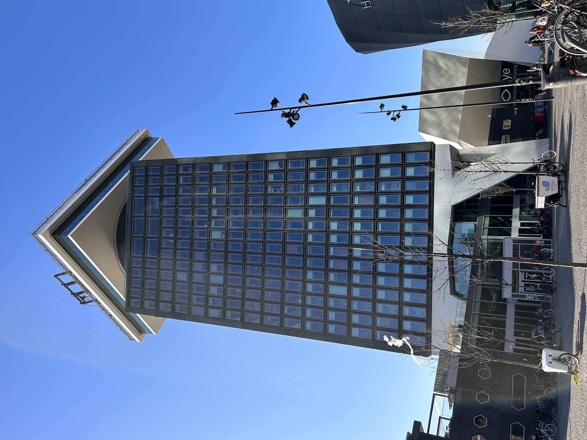
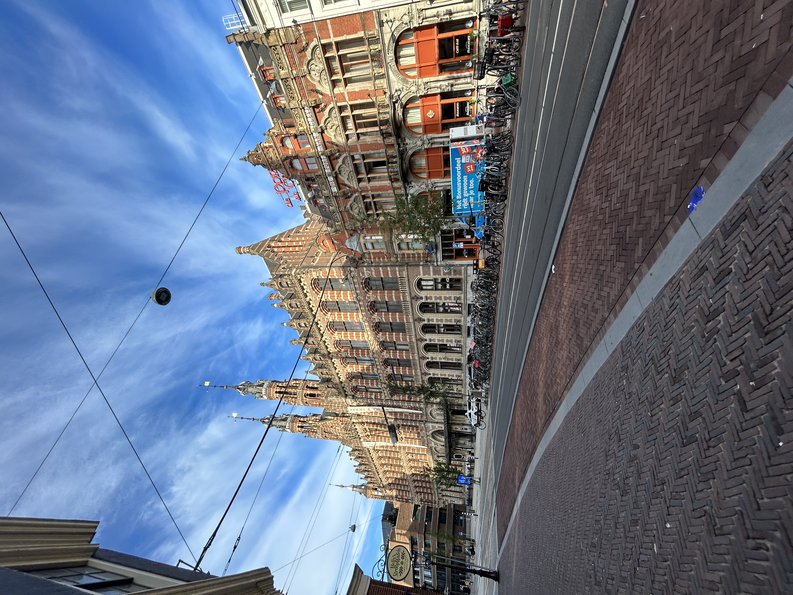
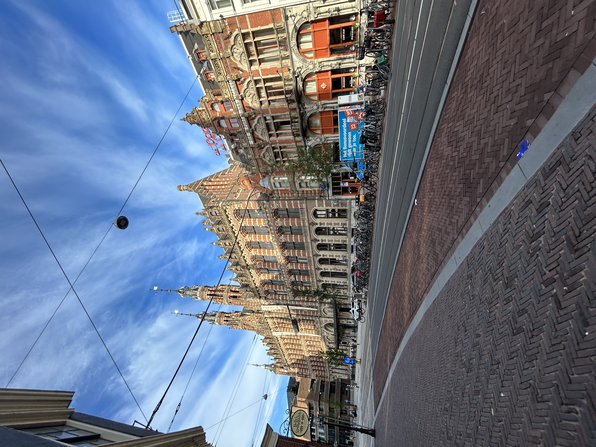
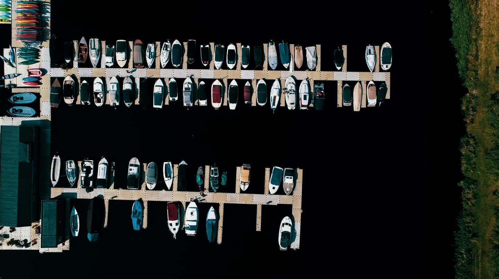
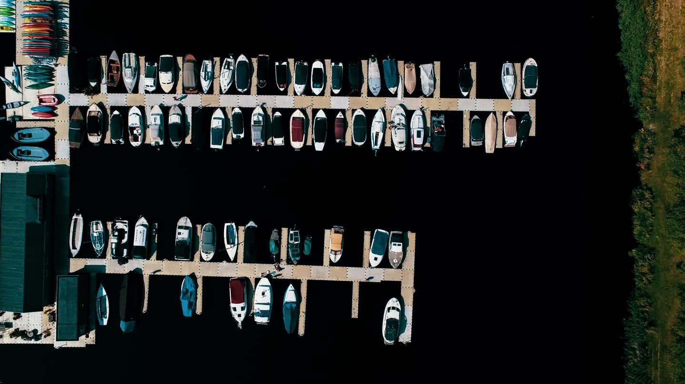

Unlock the best photography spots in Amsterdam! From picturesque
canals and historic architecture to bustling street scenes, hidden
arts… Amsterdam has it all. Our guide will lead you to these hidden
gems, ensuring you capture the city's unique beauty with your
camera.
Explore Amsterdam
Iconic Landscape and Bridges
Amsterdam is renowned for its picturesque canals, Landscapes and
charming bridges, which crisscross the city, creating a unique and
romantic atmosphere. These waterways offer stunning reflections of
historic buildings and provide opportunities for leisurely canal
cruises.


Historic Architecture
The city's rich history is reflected in its architecture, with
well-preserved 17th-century buildings lining the streets. The
ornate facades of canal houses, the grandeur of churches like
Westerkerk, and the Royal Palace at Dam Square showcase
Amsterdam's architectural heritage.

Vibrant Street Sences
Amsterdam's streets come alive with a vibrant mix of cultures,
offering colourful markets, street art, and lively cafes. From the
bustling Albert Cuyp Market to the artistic energy of
neighbourhood’s like De Pijp, there's always something exciting
happening on the city's streets.

 



 

 
